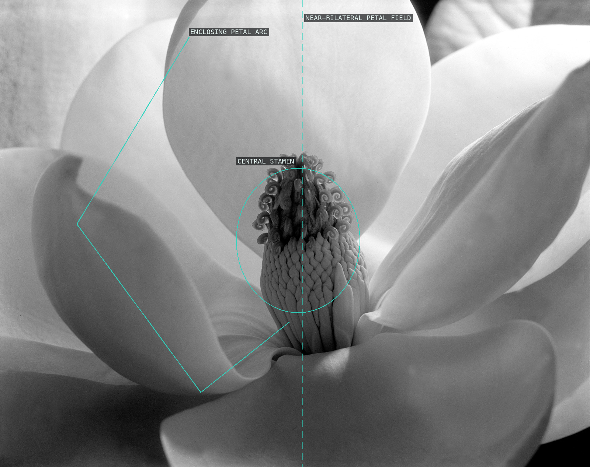
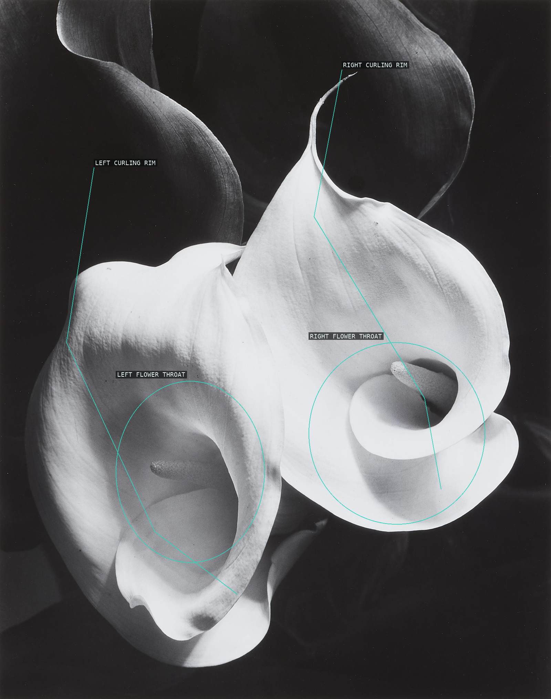
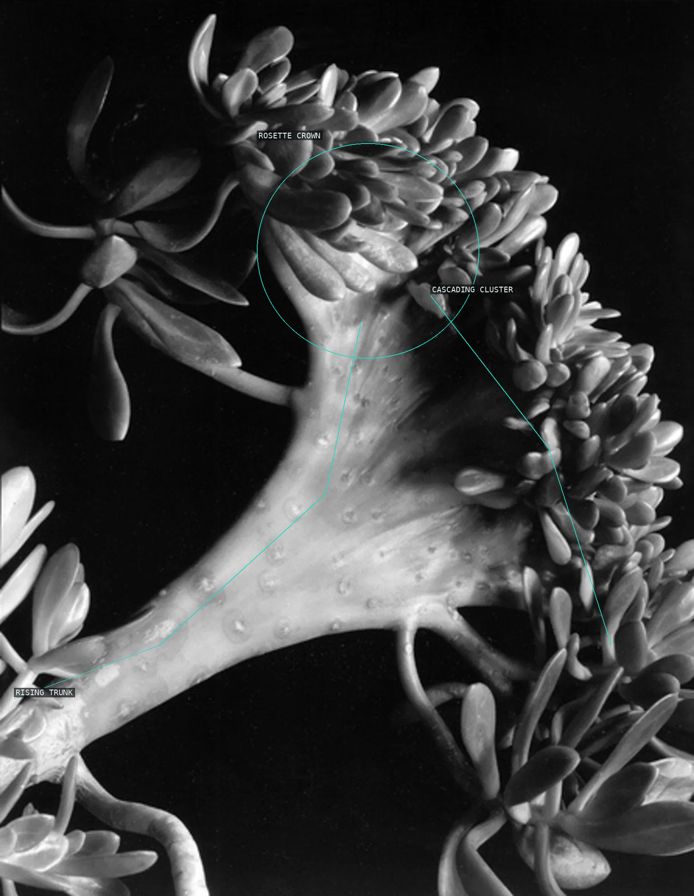
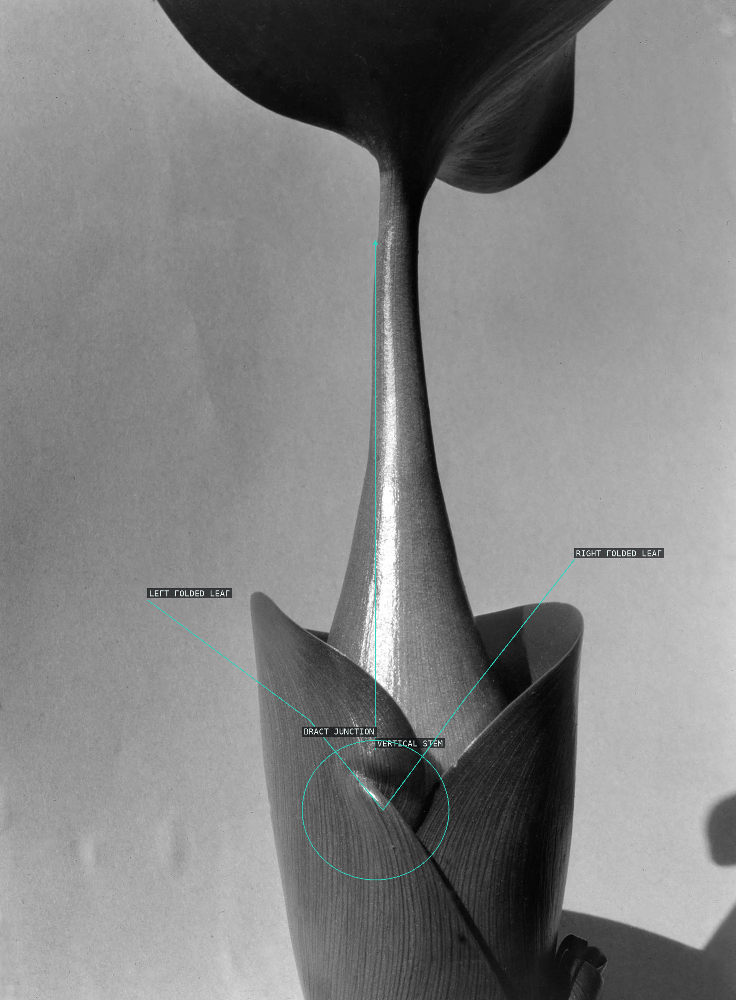

/* imogen-cunningham - proofs */
4 plates. Deterministic overlays rendered by the composition-analysis skill.

01-magnolia-blossom
Pale petals form a near-bilateral field that funnels attention to the dark stamen.

02-two-callas
Two bright flower openings form an asymmetrical dialogue in the dark field.

03-succulent
An oblique trunk rises into an off-center crown and cropped cascades of leaves.

04-water-hyacinth
A narrow vertical stem meets folded leaves and broad surrounding negative space.